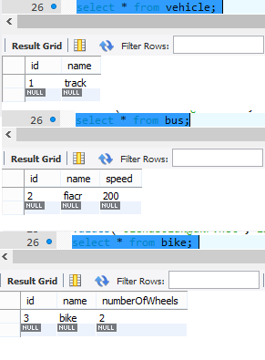
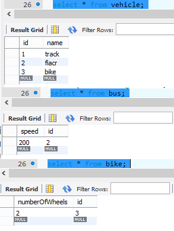

Зміст
Програмний фреймворк (англ. software framework) — це готовий до використання комплекс програмних рішень, включаючи дизайн, логіку та базову функціональність системи або підсистеми.
ORM (англ. Object-relational mapping, Об'єктно-реляційна проекція) — технологія програмування, яка зв'язує бази даних з концепціями об'єктно-орієнтованих мов програмування, створюючи «віртуальну об'єктну базу даних».
Hibernate — засіб відображення між об'єктами та реляційними структурами (object-relational mapping, ORM) для платформи Java.
HQL- Hibernate Query Language
Реалізує JPA.
INTRODUCTION
Used in data layer of application.
--------------2----------------Download jars, put them in user library and add this library to the project. Download and add JDBC driver according to used database.
--------------3----------------Hibernate Configuration File - hibernate.cfg.xml(properties - databesse connection settings,SQL Dialect,JDBC connection pool,second-level caache,drop and recreate schema on start-up,mapping - entity classes).
@Entity
@Id
SessionFactory sessionFactory=new Configuration().configure("hibernate.cfg.xml").buildSessionFactory();
Session session=sessionFactory.openSession();
session.beginTransaction();
session.save(user);
sesion.getTransaction().commit();
Create session factory -> create session -> use to do CRUD operations
--------------4----------------
<property name="hbm2ddl.auto">create</property> - drop and recreate
<property name="hbm2ddl.auto">update</property> - don't drop
@Entity(name="user")
@Column(name="user_name")
Annotations can be above getters.
@Table(name="user_table")
@Basic - apply hibernate defaults to field(default)
@Transient - do not create this column
@Temporal(TemporalType.DATE) - save only date not time
@Lob -this is large object
user u = (user) session.get( user.class, 3); // get user with id=3
--------------7----------------
@Id@GeneratedValue - generate primary key automatically
@GeneratedValue(strategy=GenerationType.AUTO) -default, hibernate makes the best decision based on database
@GeneratedValue(strategy=GenerationType.IDENTITY) - uses database feature IDENTITY
@GeneratedValue(strategy=GenerationType.SEQUENCE) - uses hibernate Sequence object
@GeneratedValue(strategy=GenerationType.TABLE) - separate table that holds last primary key
EMBEDDABLE OBJECT
In order to add value object(not entity) to some entity, we use annotations
@Embeddable - in value object class
@Embedded - in entity class
It adds columns with value object field names to entity table.
@AtributesOverrides({Holds list of individual attribute's overrides annotations})
@AttributeOverride - reconfigure default or configured attributes of embedded object
@AttributeOverride(name="field_name", column = @Column(name="new_name")) - overrides column name
@EmbeddedId - if id is value object
EMBEDDABLE COLLECTIONS
@ElementCollection
private Set<Address> list=new HashSet<Address>();
Adds collection elements in another table with id reference to the main object
@JoinTable(name="join_table_name") - rename join table(collections)
@JoinTable(name="join_table_name",joinColumns=@JoinColumn(name="Join_column_name"))
In order to have id column in collection table:
1)hashset -> arraylist
2)@GenericGenerator(name = "generator", strategy ="increment" )- hibernate specific
3)@CollectionId(columns={@Column(name="Collection_Id")}, generator = "generator", type = @Type(type="long")) - hibernate specific
If user has collection in it, do we get whole collection or just user details?
1)Lazy Fetch - you get the data only when you need it(list is fetched only when u.getAdressList() is called) - default;
2)Eager - get all information - @ElementCollection(fetch=FetchType.EAGER)
Lazy fetch is possible due to Proxy Class(it gets it the first time). Proxy Class is subclass of Entity Class and has all its methods.It fills anly first-level values. get returns proxy class. Proxy Class fetches values from database and then calls parent method. After session is closed, proxy object cannot get data from databese and throws exception.
RELATIONSHIPS BETWEEN ENTITIES
Different relationships between Entity Classes
We have two entities - User and Vehicle.
Add to one Entity field of another Entity. Than it creates column in table that points to another Entity table(by primary key).
@OneToOne
@JoinColumn(name="joined_name") - can be added
private Vehicle vehicle;
In class User
@OneToMany
@JoinTable(name="USER_VEHICLE",joinColumns=@JoinColumn(name="USER_ID"),
inverseJoinColumns=@JoinColumn(name="VEHICLE_ID"))
private Collection<Vehicle> vehicle = new ArrayList<Vehicle>();
Creates new table which maps ids of two entities.
OR
In class Vehicle
@ManyToOne
private User user;
If in relationship OneToMany we don't want seperate table to be created. Only additional column in Vehicle table is created.
@OneToMany(mappedBy="user")
private Collection<Vehicle> vehicle = new ArrayList<Vehicle>();
@ManyToOne
@JoinColumn(name="USER_ID")
private User user;
@ManyToMany
private Collection<Vehicle> vehicles = new ArrayList<Vehicle>();
@ManyToMany(mappedBy="vehicles") - is not doing the mapping;without mappedBy two tables are created
private Collection<User> users = new ArrayList<UserS>();
@NotFound(action=NotFoundAction.IGNORE) - do not throw exception if mapped value equals to null; hibernate specific
Hibernate supports List/ArrayList,Set,Map
@OneToMany(cascade=CascadeType.PERSIST) - save referenced entity object automatically
session.persist(user);
CascadeType.ALL - all operations are cascaded.
INHERITANCE
@Entity
@Inheritance(strategy=InheritanceType.SINGLE_TABLE) - default configuration
@DiscriminatorColumn(name="VEHICLE_TYPE",discriminatorType=DiscriminatorType.STRING)
public class vehicle
@Entity
@DiscriminatorValue("Busss")
public class bus extends vehicle
@Entity
public class bus extends vehicle
@Entity
@Inheritance(strategy=InheritanceType.TABLE_PER_CLASS)
public class vehicle{
@Id@GeneratedValue(strategy = GenerationType.TABLE) - cannot use auto,wont work with inherited types
private int id;

@Entity
@Inheritance(strategy=InheritanceType.JOINED)
public class vehicle {
@Id@GeneratedValue
private int id;

CRUD OPERATIONS
all using transactions
supplier supp=new supplier();
//create
supp.setName("ccccc");
session.beginTransaction();
session.save(supp);
//read
category c = (category) session.get(category.class, 3);
//updete=get c+change c + commit
//delete
session.delete(c);
session.getTransaction().commit();
OBJECT STATES
Entity object states in Hibernate:
In order to make detached object persistent again, open new session and use statement session.update(user). It will create update statement despite of object being changed between sessions or not.
@org.hibernate.annotations.Entity(selectBeforeUpdate=true) - checks if update needed before updating
HQL
import org.hibernate.Query;
Query q=session.createQuery("from supplier"); // supplier - object name,not table
List<supplier> results = q.list();
Query q=session.createQuery("from supplier where id=2");
Pagination in HQL
Query q=session.createQuery("from supplier");
q.setFirstResult(5); //start pulling records from fifth
q.setMaxResults(6); //number of records to pull
Select in HQL
Query<String> q=session.createQuery("select name from supplier");
List<String> results = q.list();
Query<Integer> q=session.createQuery("select max(id) from supplier");
String st="5 or 1=1"; //can be user input
Query<supplier> q=session.createQuery(" from supplier where id>"+st); //pulls all records
Conclusion: using SQL injection can cause problems.
Parameter Binding
String st="2";
String name="green tea";
Query
q.setInteger(0, Integer.parseInt(st)); // 0 -position if we have multiple placeholders
q.setString(1,name);
Query<supplier> q=session.createQuery(" from supplier where id>:ID and name=:NAME");
q.setInteger("ID", Integer.parseInt(st));
q.setString("NAME",name);
Named queries are used to get all queries in one place and then just call them by their names.
@Entity
@NamedQuery(name="supplier.byId",query="from supplier where id=?")
public class supplier
Query<supplier> q=session.getNamedQuery("supplier.byId");
q.setInteger(0, 2);
@NamedNativeQuery(name="supplier.byName",query="select * from supplier where name=?",resultClass=supplier.class) // teble name (SQL query)
Query<supplier> q=session.getNamedNativeQuery("supplier.byName");
CRITERIA API
Criteria criteria=session.createCriteria(supplier.class);
criteria.add(Restrictions.eq("name","green tea"));
List<supplier> results = criteria.list();
criteria.add(Restrictions.eq("name","green tea"))
.add(Restrictions.gt("id",3));
criteria.add(Restrictions.like("name","%e%"))
.add(Restrictions.between("id", 2, 5));
criteria.add(Restrictions.or(Restrictions.lt("id", 2),Restrictions.like("name", "pull%") ));
Projections - choose columns,agregations,group by.
Criteria criteria=session.createCriteria(supplier.class)
.setProjection(Projections.property("name"));
List<String> results = criteria.list();
Criteria criteria=session.createCriteria(supplier.class)
.setProjection(Projections.max("id"));
List<Integer> results = criteria.list();
Criteria criteria=session.createCriteria(supplier.class)
.setProjection(Projections.property("name"))
.addOrder(Order.desc("name"));
Query By Example - ignores null properties, primary key properties and any other indicated properties.
supplier s =new supplier();
s.setName("mal inc");
Example e=Example.create(s).excludeProperty("age");
Criteria criteria=session.createCriteria(supplier.class)
.add(e);
Java Persistence API — стандартизований інтерфейс для Java ORM фреймворків. Виник через популярність вільного ORM фреймворку Hibernate, та бажання мати незалежний від конкретної реалізації стандарт.
Entity (сутність/утворення) — об'єкт для якого забезпечується ORM. Класи Entity задаються аннотацією @Entity або перелічуються у XML дескрипторі. Клас Entity повинен мати конструктор без аргументів, з рівнем доступу — public або protected. Якщо сутність передається як віддалений об'єкт (remote object), вона має реалізувати інтерфейс Serializable. Клас Entity не може бути завершеним (final) або мати завершені методи.